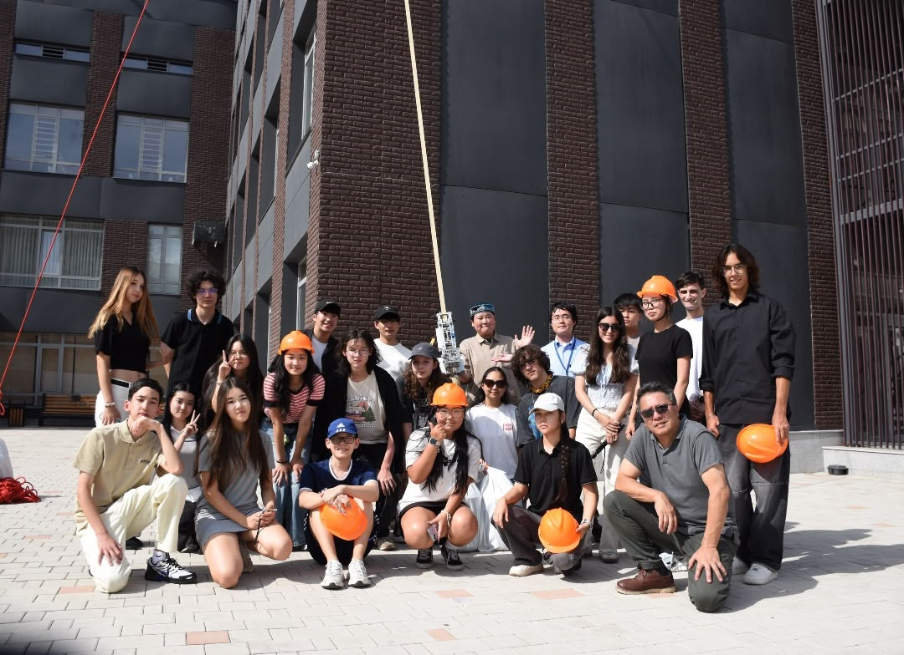

Yurt Space
Yurt Space is a science hub gathering students from every corner of Kazakhstan to make science accessible to everyone. It was first founded at NIS Almaty-Medeu. The hub gained popularity among students thanks to the NSS Space Settlement Competition.

Previous Events

World Space Elevators Competition

NSS Space Settlement Competition

NSS Mentoring Program

UNICEF